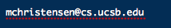

PLDI 2016 Student Volunteer Info Page
Welcome to PLDI 2016!
We've collected all the information you need to do your job as a PLDI 2016 student volunteer on this page. Many thanks for volunteering! We look forward to working with you, and we hope that you have an enjoyable experience here at PLDI.
PLDI Schedule
The official schedule can be downloaded as a PDF for offline use or can be viewed online.
PLDI Student Volunteer Schedule
The student volunteer schedule is available here.
Descriptions of Volunteer Roles
Descriptions of the volunteer roles can be found here.
Slack Channel (pldi2016volunteers)
We have a slack channel for volunteering-related discussions. This is probably the fastest way to reach someone during PLDI. In general, if you have a problem, the first person you should seek out is one of the PLDI Student Volunteer Co-Chairs. See below.
If you can't find one of us, work your way down the list. Also, many of your SV peers have volunteered before. They are very a great resource. Try asking them for help!
Important Contacts
| Name | Role | Contact |
| Dan Barowy | Student Volunteer Co-Chair | Slack ID: dbarowy |
| Michael Christensen | Student Volunteer Co-Chair |  Slack ID: michael |
| Annabel Satin | Events Manager |  |
| Ben Hardekopf | Student Research Competition and Volunteer Chair | Slack ID: hardekbc |
| Bader AlBassam | Video Recording Chair | Slack ID: bader |
| David Darais | Video Post-Production Chair | Slack ID: daviddarais |